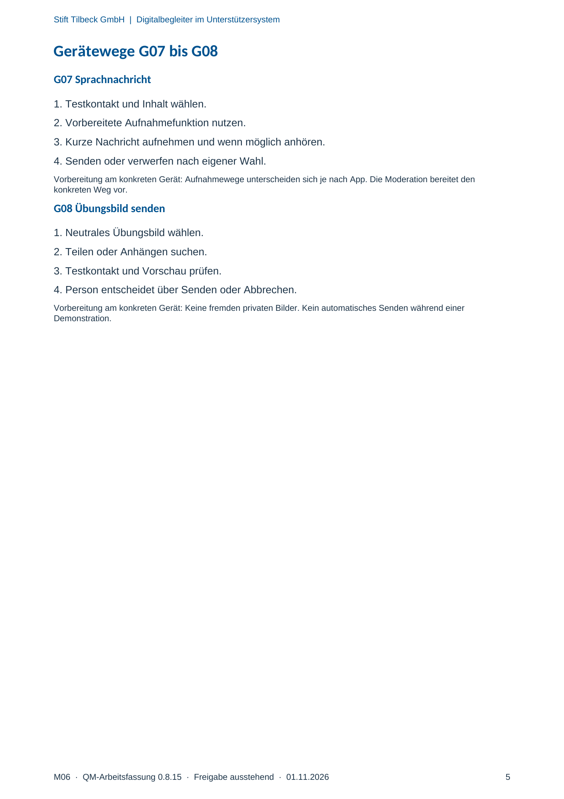

M06 · Originalseite 5
Sprachnachricht
Original-Druckseite mit G07. Auf derselben Seite stehen außerdem G08. Diese sind dadurch keine zusätzliche Aufgabe.
Fragen und Ankreuzfelder werden auf dem Ausdruck bearbeitet. Die Lesefassung speichert keine Antworten.
Lesefassung · Seite 5
Stift Tilbeck GmbH | Digitalbegleiter im Unterstützersystem
M06 · QM-Arbeitsfassung 0.8.15 · Freigabe ausstehend · 01.11.2026 5
Gerätewege G07 bis G08
G07 Sprachnachricht
1. Testkontakt und Inhalt wählen.
2. Vorbereitete Aufnahmefunktion nutzen.
3. Kurze Nachricht aufnehmen und wenn möglich anhören.
4. Senden oder verwerfen nach eigener Wahl.
Vorbereitung am konkreten Gerät: Aufnahmewege unterscheiden sich je nach App. Die Moderation bereitet den
konkreten Weg vor.
G08 Übungsbild senden
1. Neutrales Übungsbild wählen.
2. Teilen oder Anhängen suchen.
3. Testkontakt und Vorschau prüfen.
4. Person entscheidet über Senden oder Abbrechen.
Vorbereitung am konkreten Gerät: Keine fremden privaten Bilder. Kein automatisches Senden während einer
Demonstration.
Originalseite ansehen
